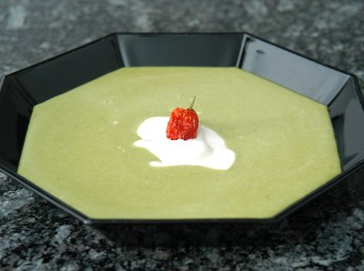

| Zutaten für 6 Personen: | |
| 1 El | Butter |
| 1 | Schalotte, fein gehackt |
| 300 g | tiefgekühlte Erbsen |
| 2 El | Risottoreis |
| 8 dl | Gemüsebouillon |
| 1 | kleiner roter Chili, entkernt, gehackt |
| 180 g | saurer Halbrahm |
| nach Bedarf | Salz, Pfeffer |
| evtl. 4 | kleine rote Chilis, zum Garnieren |
ca. 30 Minuten. Ergibt ca. 7 dl
Butter warm werden lassen. Schalotten andämpfen, Erbsen und Reis ca. 5 Minuten mitdämpfen.
Bouillon dazugiessen, aufkochen, Hitze reduzieren, Suppe offen ca. 20 Minuten köcheln.
Erbsen und Reis mit der Flüssigkeit pürieren, durch ein Sieb streichen, Flüssigkeit evtl. mit Wasser auf 7 dl ergänzen, in Pfanne zurück giessen, aufkochen. Chili und 2/3 des Rahms darunter rühren, Suppe würzen, in vorgewärmten Tassen oder Tellern anrichten, mit restlichem Rahm und evtl. den Chilis garnieren.
Lässt sich auch vorbereiten: Suppe ohne Rahm 1/2 Tag im Voraus zubereiten, zugedeckt kühl stellen.
Pro Person: 7g Fett, 4g Eiweiss, 11g Kohlenhydrate, 508 kJ, 121 kcal
Betty Bossi Zeitung 1/03
Super! 19.1.2003 RE
Schmeckte auch ausgezeichnet am 28.2.2010. Man muss sich genau überlegen ob die Suppe als Vorspeise gereicht wird oder als Hauptgang. Mit 7dl kommt man bei 6 Personen nicht weit. Das gibt vielleicht eine Mokkatässli Suppe. Da stellt sich in der Tat die Frage wie man das serviert bevor die Suppe kalt ist. Als Hauptgang habe ich das für 2 Personen mit 5dl Bouillon und 200g Erbsen zubereitet. 180g Saurer Halbrahm waren vielleicht etwas viel (musste aber weg wegen dem Datum). RE
@LINKBACK_TAG@ @WAKELOCK@